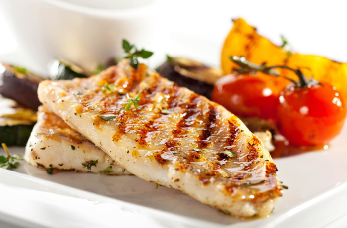

Рыба по-итальянски

Фосфор, Омега-3, йод, и конечно, важный для организма белок - все это есть в рыбе. Но едим мы ее не так часто. А
есть надо! Тем более, что рыба готовится быстро. Делюсь одним из своих рецептов.
Ингридиенты
- филе трески- 500г
- рубленая петрушка- 3 ст.л.
- растительное масло- 6 ст.л.
- чеснок- 2 зубчека
- перец- по вкусу, 1 щепотка
- соль- по вкусу, 1 щепотка
- сливочное масло 20г
- Лимонный сок- 10мл
Процесс приготовления
1 шаг
Филе нарезать тонкими кусочками и разложить на противень. Предварительно на него нужно налить, 2–3 столовые ложки
растительного масла. Посолить и поперчить, полить растительным маслом и сбрызнуть растопленным сливочным маслом.
2 шаг
Мелко нарезать чеснок и посыпать им рыбу.
3 шаг
Готовить в духовке на температуре 180–200 градусов минут 15–20. За пять минут до готовности перевернуть аккуратно
рыбу, посыпать петрушкой и убрать еще на 5 минут. На готовую рыбу выдавить лимонный сок. Приятного аппетита!